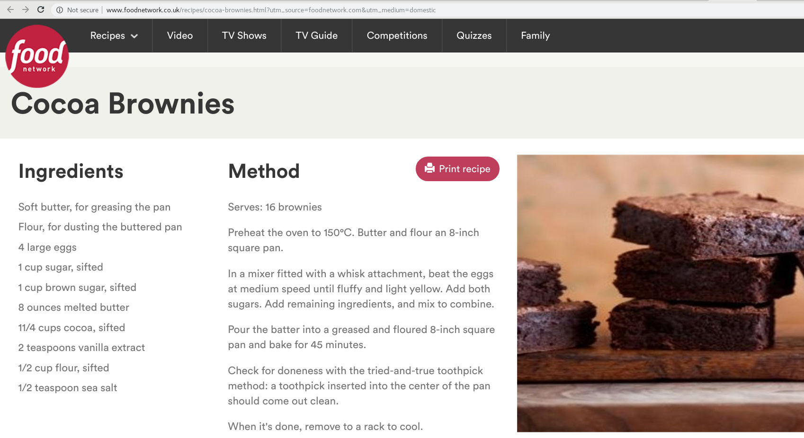
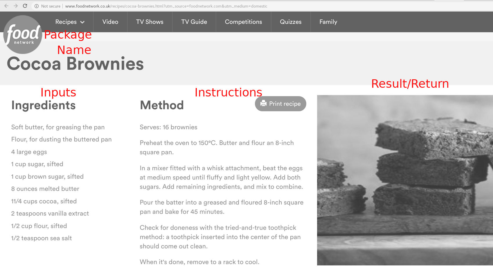
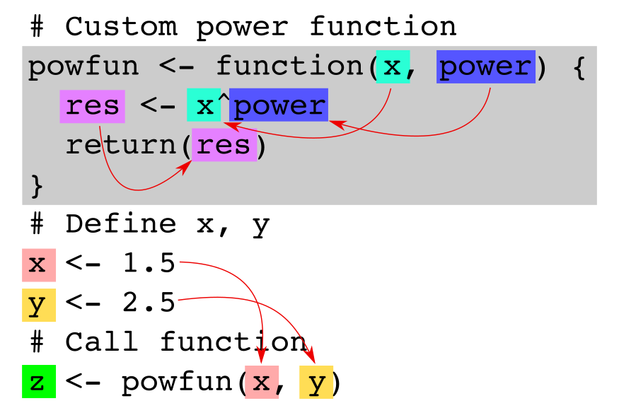
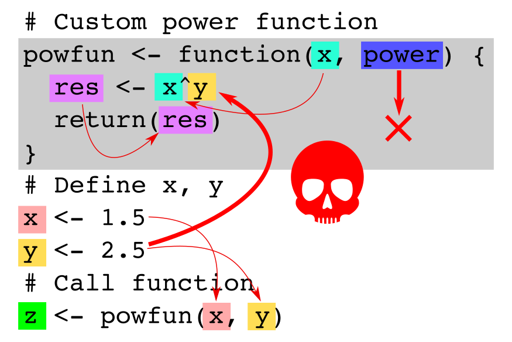

Chapter 6 Functions and mathematical operators
In this session we will learn how to write (basic) custom functions in R. For some of the examples and the exercises we may need arithmetics and mathematical functions.
We have already used some basic arithmetics such as addition (+) or the power function (^) in the previous lessens. A full list can be found on the R documentation ?Arithmetic (or help(Arithmetic)). In addition to that we may use basic mathematical functions such as sine and cosine (sin, cos), the exponential and natural logarithmic function (exp, log), or others. A full list can be found on the help page for ?Math.
6.1 Functions
Functions and control structures are what make your code more dynamic. In programming, “functional programming” is a programming paradigm, a style how code is written. Rather than writing so called spaghetti code (one line after another after another …) functions and control structures allow one to build code in blocks. Writing functions and control structures makes the difference between a pure user and a developer.
Functional programing helps to keep the code:
- more structured,
- more readable,
- and much easier to maintain or find errors.
Control structures are typically not used when using the interactive command line, but are essential parts of of each program and software we use.
Functions are sets of instructions which take over specific tasks. One simple example is the function sd which computes the empirical standard deviation of a set of numeric values. Mathematically the standard deviation is defined as:
\(\text{sd}(x) = \sqrt{\frac{1}{N - 1} \sum_{i=1}^N (x_i - \bar{x})^2} ~~|~~ i = 1, \dots, N\)
Let’s assume we have three numeric vectors and we need the standard deviation from all of them.
# Define some values
x1 <- rnorm(100, 0, 1)
x2 <- rnorm(100, 0, 1.5)
x3 <- rnorm(100, 0, 5)
# Calculate standard deviation once ...
sd1 <- sqrt(sum((x1-mean(x1))^2) / (length(x1)-1))
# ... and again, ...
sd2 <- sqrt(sum((x2-mean(x2))^2) / (length(x2)-1))
# ... and again ...
sd3 <- sqrt(sum((x3-mean(x3))^2) / (length(x3)-1))
print(c(sd1, sd2, sd3))## [1] 0.9135039 1.6645495 5.4322861… even if the equation for the standard deviation is rather simple you can easily see that the code is quickly getting complex and prone to errors! Rather than doing this spaghetti-style-coding we write ourself a function. Well, sd is a mathematical function from R base, but here we will use a simple hand-written sd function (I call it sdfun):
# Define the function once:
sdfun <- function(x) {
return(sqrt(sum((x - mean(x))^2) / (length(x) - 1)))
}
# Define some values
x1 <- rnorm(100, 0, 1)
x2 <- rnorm(100, 0, 1.5)
x3 <- rnorm(100, 0, 5)
# Calculate standard deviation
sd1 <- sdfun(x1)
sd2 <- sdfun(x2)
sd3 <- sdfun(x3)
print(c(sd1, sd2, sd3))## [1] 0.8895834 1.5284751 5.3359076# Or even
print(c(sdfun(x1), sdfun(x2), sdfun(x3)))## [1] 0.8895834 1.5284751 5.33590766.2 When should I use functions?
A good indicator is if you start copy & paste code! Copy & paste means that you quite likely use the same thing (or something very similar) over and over again. Thus, think of writing a function instead! Functions can be rather simple, or already more complex allowing to control them in a way that they do the same thing but with slightly different conditions. This is done by adding additional input arguments to the function which allows one to control the function (control arguments).
As soon as your code is getting more complicated: think of extracting some blocks/essential parts and put them into functions. The functions can be stored in extra script files which drastically reduces the number of lines of code in your main script and increases the readability. This helps a lot!
Whenever you have a block of code you may reuse in the future, or a block of code you double-checked and you are sure it works well: you may pack it into functions. This allows you to reuse the function in the future, and, when searching for errors, you may not have to check the code inside these functions as you are sure that they work as expected.
6.3 The structure of functions
Functions consist of three key elements. These are:
- input arguments
- instructions
- output or return values
All three are optional. Well, if you have a function without instructions, the function does absolutely nothing and would be completely useless, however, technically an empty function can be created.
Input and output are also optional. You may have a function which has input arguments but no output (e.g., a function that saves data to a file), or no input but output (e.g., a function that reads data from a standard file). However, these are special cases.
Typically functions have at least inputs and instructions, and most will also return a result or at least an indication that the function successfully executed the instructions.
6.4 Functions in R
As we have learned in an earlier session nearly anything in R is an object. Functions are first class objects as well and can be used as all the other objects or variables. This allows one to pass functions as input to other function which is frequently used and an important feature in R, even if it might be a bit confusing to people coming from other programming languages.
Functions can of course also be nested (a function calls another function as part of the instructions), and functions can be used recursively (one function may call itself several times) which is useful for some tasks.
Functions are often encapsulated (they take their input, do something, and return a result without touching all the objects on the workspace). However, they do not have to be encapsulated! R uses lexical scoping and functions may access variables on the workspace and/or other environments. This can be very useful, but also a bit confusing.
6.5 Calling functions
Function calls are indicated by round brackets ((...)). We have already used a range of functions such as seq(...), mean(...), is.numeric(...), as.numeric(...), or plot(...) over the past weeks. A side note: R differs between functions and so called generic functions. Generic functions act differently depending on the input. For example, summary(c("A","B","A","B")) and summary(1:50) act different on character vectors and numeric vectors. We will learn something about generic functions in another session.
6.6 Naming functions
You can basically use any name (as long as it is a valid variable/function name). However, you may overwrite existing functions if the function name already exists! Thus, use meaningful, clear, and unique names and try not to name all your functions f and fun and don’t use existing names such as mean or plot (except you know what you do).
In R variables and functions with the same name can co-exist, e.g.,:
mean <- c(1, 2, 3, 4, 5, 6)
mean(mean)## [1] 3.5Here we define a numeric vector mean and calculate the arithmetic mean by calling mean(mean). R calls the function mean using the vector mean. Even if this works try to avoid such constructs!
6.7 Functions In Real Life
We all come across function-like situations in our daily life multiple times a day. One illustrative example are backing recipes. Imagine you are cooking some brownies:

Classical recipes are set up as follows:
- A list of the required ingredients (our inputs)
- A set of instructions (mix this, do that, bake for 180 minutes)
- And a delicious foto. Or, if you cook it, some nice food! That’s the result or output.
We can even find more analogies on this screenshot:
- The name of the recipe is like the function name, the website where we have found the recipe is the name of the R package (if the function is included in a package).

Thus, every time we call this “function” (use this recipe) with this very specific name (Cocoa Brownies) from this specific package (or site, the food network) using the inputs (ingredients) as specified we will always get the same result. And that’s what functions do.
6.8 Declare Functions in R
Let’s begin with an empty function. As mentioned previously all parts of a function (input, instructions, and output) are optional. If we don’t declare all three, that is what we will end up:
myfun <- function() {
# Instructions
}We define a new function called myfun by assigning a new function() to the variable myfun as you would do it with e.g., numeric values (x <- 3). Function inputs will be declared within the round brackets (), but this function has no inputs. The instructions are defined inside the curly brackets {...}, in this example it is simply a comment (no code; no instructions). And last but not least, the function does not return anything at the end.
However, we just defined our first custom function! As for all other objects we can examine the object using default methods such as class and is.function:
# Get the class of myfun
class(myfun)## [1] "function"# Check if is function
is.function(myfun)## [1] TRUETo be precise: functions always return something even if nothing is explicitly declared as in our empty function myfun. Returns may be invisible as in this case, but R returns something. Let’s store the return on x and see what we got:
# Declare function
myfun <- function() {
# Instructions
}
# Store return on x
x <- myfun()
# Examine
print(x)## NULLclass(x)## [1] "NULL"Our empty function returns a NULL (an object of class "NULL").
6.9 The NULL value in R
The NULL value in R is what the None type is in python. It is basically an object which tells us that it does not contain anything (so NULL basically means “nothing”). NULL objects are used quite regularly and we might, every now and then, check for is.null to check if we got an empty object.
# Define variable
x <- NULL
# Print
print(x)## NULL# Check if is null
is.null(x)## [1] TRUE6.10 Back to functions
Let us write some more useful functions.
- Input: no input
- Instructions: print a string
- Output: no output
# Declare the function
myfun <- function() {
print("Hello World!")
}
# Call function
myfun()## [1] "Hello World!"We can call our new myfun function by typing myfun() into the console. As we have no input, nothing has to be declared between the brackets (we are not even allowed to do so). As soon as called the function executes the instructions. Here, the string "Hello World!" is printed.
Again, we have not explicitly declared an output or return value, but R returns us something:
# Store return value/output
x <- myfun()## [1] "Hello World!"print(x)## [1] "Hello World!"class(x)## [1] "character"As we can see the return, which is assigned to our variable x, contains the very same character string the function printed. Why? Well, this is a bit tricky to understand. R always returns the last return it can find. print(...) invisibly returns what it just printed. Thus, the last return was the string itself (even if we did not see it), wherefore our myfun function also returns this at the end. It is not important to know the details, but keep that in mind!
We now extend our function and provide an input argument:
- Input: one argument called
x - Instructions: combine two character strings (
paste) and print it - Output: no explicit return value
# Declare the function
myfun <- function(x) {
print(paste("Good morning", x))
}
# Call function
myfun("Jochen")## [1] "Good morning Jochen"We can now call our function myfun and provide (required) one input, let’s use the character string "Jochen" for now. The function now takes this input argument and stores it - internally - on the name x (as we named our input x). Given the instructions the function combines the two character strings "Good morning" and x and prints the result.
Once defined we can now reuse our function myfun with different inputs:
myfun("Helga")## [1] "Good morning Helga"myfun("Jose")## [1] "Good morning Jose"Define a return value:
- Input: one argument called
x - Instructions: combine two character strings (
paste) and print it - Output: return the number of characters of the pasted string
Again, extend the function from above. We now define an explicit return value. But rather than just returning the combined string we are interested in the number of characters the string had.
The instructions:
- paste the two character strings
"Good evening"andxand store the new character string on a variable calledtmp - print the string
tmp - count the number of characters of the string
tmp(that’s whatnchardoes; number of characters) - … and return this number, an positive integer.
# Declare the function
myfun <- function(x) {
# Create the string
tmp <- paste("Good evening", x)
# Print string
print(tmp)
# Return number of characters
res <- nchar(tmp)
return(res)
}# Call function, store result
x <- myfun("Jochen")## [1] "Good evening Jochen"# Print result
print(x)## [1] 19# Class
class(x)## [1] "integer"Et voila, our first “useful” function with inputs, instructions, and an explicitly defined return value or output. ### Different formulations
In R things can often be written in slightly different ways. This also yields for function definitions. Even if they are all valid and do the very same thing, some of them are not recommended at all. What I recommend is to always explicitly use the return(...) command because it makes it much easier for you and all others reading your code to identify what will be returned (increase readability)
Furthermore, except for very short functions, always use the curly brackets {...} as they structure your code. You can easily identify the instructions as they are written between brackets. For multi-line functions this is required anyways.
Version 1: (recommended)
powfun <- function(x) {
return(x^2)
}Version 2: as a one-liner (recommended)
powfun <- function(x) { return(x^2) }Version 3: without brackets (ok for short functions)
powfun <- function(x) return(x^2)Version 4: without brackets, no explicit return (not recommended)
powfun <- function(x) x^2Version 4: without brackets, no explicit return (not recommended)
powfun <- function(x) {
x^2
}6.10.1 Multiple input arguments
Functions can have multiple input arguments and they do not have to be named x (even if often used as the first argument). The following simple function has two inputs, one called greeting, and one called name. We are expecting two strings, paste them together (paste), and return the new character string. In contrast to the functions shown earlier in this document the function itself does not print the new string, but returns it at the end of the function.
# Function with two required arguments
myfun <- function(greeting, name) {
# Store combined string
res <- paste(greeting, name)
return(res)
}Functions with multiple arguments can be used the very same way, except that we have to provide two input arguments separated by a colon.
# Call the function
x <- myfun("Welcome to the course,", "Jordan")
print(x)## [1] "Welcome to the course, Jordan"6.11 Practical Session
Let’s do some practical work in this session.
6.11.1 Exercise 1
- write a function
powfun2with one input argumentxwhich returns \(x^2\) (?Arithmetic) - write a function
powfun4with one input argumentxwhich returns \(x^4\)
Solution:
# One input argument 'x', returns 'x^2'
# Input: numeric vector 'x'.
# Return: numeric vector of the same
# length, x to the power of 2.
powfun2 <- function(x) {
return(x^2)
}
# One input argument, just for demonstration purpuses
# I call it 'z' here! Returns input^4, or z^4.
# Input: numeric vector 'x'.
# Return: numeric vector of the same
# length, x to the power of 2.
powfun4 <- function(z) {
return(z^4)
}6.11.2 Exercise 2
- write a function
powfunwith two input arguments to calculate \(x^y\). Return the result.
Solution: The two functions from exercise 1 are extremely similar, except they use a different power parameter. If you write functions, you may write them as general as necessary. Thus, let us define one function which is able to do both:
# Flexible custom power function
# Input: x numeric, the 'base'
# y numeric, the power exponent
# Return: Numeric vector with x^y
powfun <- function(x, y) {
return(x^y)
}Note that the function now has two inputs, namely x and y. You could add additional inputs by simply adding them (comma separated), e.g., function(x, y, a, b, foo, bar) if needed.
Testing the functions:
# 3 to the power of 2
powfun2(3)## [1] 9# 3 to the power of 4
powfun4(3)## [1] 81# The same with the powfun function:
powfun(3, 2)## [1] 9powfun(3, 4)## [1] 816.11.3 Exercise 3
Combine exercise 1 & 2:
- overwrite your existing functions
powfun2andpowfun4by creating new functions with the same name. Rather than callingx^2andx^4explicitly these functions should internally call the function from exercise 2 and return its results (nesting functions, one of your functions internally uses another function). - what happens if the inputs are vectors, what if they are vectors of different lengths?
- extend the function from Exercise 2, check you get valid inputs (define ‘valid’ on your own)
Solution: I am sorry this was rather confusing. What I had planned is that you re-declare powfun2 and powfun4 (overwrite the existing ones) and, internally, call powfun rather than hard-coding x^2 or x^4 inside powfun2 and powfun4. So what we do is to define powfun2 <- function(x) { ... } but now call powfun inside (so include powfun in the instructions {...}).
For the new powfun2: As we would like to “return the input to the power of two”, we use “2” as the second input argument to “powfun”. As the first input we forward x. What happens is that we call powfun2 with some data on input x. powfun2 does not do anything with x but directly “forwards” it to the powfun function (as first input argument to powfun). The second input is “2” (always 2 in this case):
# Re-declare functions
powfun2 <- function(x) {
# Call powfun: forward "x", set the second argument to "2"
# "powfun" does the calculation for us.
res <- powfun(x, 2)
return(res)
}The very same for the new powfun4 but using “4” as the second argument when calling the powfun function (inside powfun4).
# Re-declare functions
powfun2 <- function(z) {
# Call powfun: forward "z", set the second argument to "2"
# "powfun" does the calculation for us.
res <- powfun(z, 2)
return(res)
}Again, I used z as input here to illustrate that the input of the function powfun2 is a different object/variable than the input x on powfun(x, y).
What happens if call powfun with two vectors (for the two inputs) of different lengt? If x is of length 1 or y is of length 1 it is kind of obvious:
# First argument 2, second argument is c(2,3,4)
powfun(2, c(2, 3, 4))## [1] 4 8 16The result is a vector c(\(2^2\), \(2^3\), \(2^4\)) (base is always 2).
# First argument a vector c(2,3,4), second argument is 2:
powfun(c(2, 3, 4), 2)## [1] 4 9 16The result is a vector c(\(2^2\), \(3^2\), \(4^2\)) (power exponent is always 2).
# First argument a vector c(2,3,4),
# the second argument is a vector c(4,3,2):
powfun(c(2, 3, 4), c(4,3,2))## [1] 16 27 16Now R performs element-wise or pair-wise calculation. Thus, the result is a vector c(\(2^4\), \(3^3\), \(4^2\)).
Less obvious: if the first argument is of length 2, the second one of length 4, or the other way around.
# First argument a vector c(2,3)
# the second argument is a vector c(2,3,4,5):
powfun(c(2, 3), c(2, 3, 4, 5))## [1] 4 27 16 243The first vector is recycled to match the length of the second vector! Thus R is actually calculating c(2, 3, 2, 3)^(2, 3, 4, 5) and we get c(\(2^2\), \(3^3\), \(2^4\), \(3^5\)). This is not how I would use such a function, but to demonstrate what R does in these cases.
Similar in this case:
# First argument a vector c(2,3,4,5)
# the second argument is a vector c(2,3):
powfun(c(2, 3, 4, 5), c(2, 3))## [1] 4 27 16 125The second vector is recycled to match the length of the first vector! Thus R is actually calculating c(2, 3, 4, 5)^(2, 3, 2, 3) (c(\(2^2\), \(3^3\), \(4^2\), \(5^3\))).
If the two length of the vectors is not a multiple of the first one, e.g, the first is of length 2, the second of length 3, R still tries to recycle the short one, but will warn you that this is not possible.
powfun(c(2, 3), c(2, 3, 4))## Warning in x^y: longer object length is not a multiple of shorter object
## length## [1] 4 27 16Checking inputs: we will learn about this in the next session, as we will make use of conditions and other control structures.
Rendered: 2019-09-08 on marvin
6.12 Function Recap
Just a short repetition of writing functions in R. During the last practical session but also when going trough your submissions on Session 03 Exercise A-C I’ve seen a lot of functions using Rs so called “lexical scoping” feature. Even if this works it is “not recommended to use” (at least not for beginners as it might be confusing very quickly). The following two images show two R functions. The first one is the suggested way to write functions.

Explanation: The function is, again, the simple power function we have used several times. The function takes two inputs, namely x and power and returns x^power at the end. Outside the function we define a x and a y, call the function, and store the result (the return of the function) on z. Several things to mention here:
- Everything you use in the function should be explicitly defined as input to the function (here
xandpower). - The objects
xandpowerinside the function are only available inside the function (the gray box is kind of a “function container” or “box”). - The object
x(red) defined outside the function is not the same as the objectx(turquoise) inside the function! Don’t mix them up. The “red”xis defined in our workspace. We forward the value of the “red”xto the function as the first input argument. Inside the function the first input argument is also calledxbut is not the “red”x. This is a new object (thus, turquoise) and gets the same value as the “red”x. - The second element of the function (
power) is not defined in the workspace but gets the value ofyas we call the function withpowfun(x, y). The function inputs do not have to match the objects outside the function.

Explanation: This shows what we should not do. Scoping is a thing, but Try not to use it and try to understand what’s happening if you do. In this case the function is even wrong. What we wanted to do is to have a function which has two inputs and returns the first input (x) to the power of the second input (power). However, if you look closely we actually do something different.
- On our workspace we have two objects
xandy. We then (as in the example above) call our function withxandyas inputs. So far, so good. - The function now gets the input
xandpower(with the values from the two objects on our workspace), however the function returnsx^yinstead ofx^power! Why does it still work? Scoping! - We are using an object
yinside the function, which has never explicitly been defined as an input to the function. R now tries to findyand will find one defined on in our workspace (the “orange” one) and uses this one. Thus, the function works and - in this case - returns the correct result, but due to the wrong reason!. - The
powerinput is never used at all. - Try to imagine what will happen if you now call
function(2, 2). Instead of returning4(2^2) the result onzwill be5.6568as the function returns2^y = 2^2.6 = 5.6568.
Thus, always (always) define all variables you use inside functions as explicit input arguments. And check your functions such that you only use objects you specified as input arguments!
6.13 Developing Functions
6.13.1 Develop functions in steps
For those who have had troubles writing functions: try to develop your functions in some kind of a multi-step approach by doing the following:
- Start with a fresh script and develop your code without functions first.
- As soon as everything works as it should, pack parts of the code into functions.
- Adjust and check your function. ### Step 1: start without functions
As an example of a multi-step approach let’s use the example from Session 02. I start with a fresh script and develop my code to find all females in the data set which are taller than the smallest man:
rm(list = objects()) # Clear the whole workspace
load("height_extended.rds") # Loading the data set
objects() # Check objects## [1] "age" "gender" "height" "name"# Smallest male person
smallest_male <- min(height[gender == "m"])
print(smallest_male)## [1] 166# Find females taller than smallest male, store index
idx <- which(gender == "f" & height > smallest_male)
print(idx)## [1] 7 59print(name[idx])## [1] "Elisabeth" "Julia"6.13.2 Step 2: pack parts of your code into a function
That works as expected! As I am now sure that the code runs and that my script does what it has to do I can pack it into a function. Note that the commands to clear the work space and the one command to load the data set will be outside the function, the function should only find the tall females.
rm(list = objects()) # Clear the whole workspace
load("height_extended.rds") # Loading the data set
# Find females taller than the smallest male person
tall_females <- function(height, gender, name) {
# Smallest male person
smallest_male <- min(height[gender == "m"])
# Find females taller than smallest male, store index
idx <- which(gender == "f" & height > smallest_male)
print(name[idx])
}
# Call function:
tall_females(height, gender, name)## [1] "Elisabeth" "Julia"6.13.3 Step 3: adjust your function
Well, that looks good so far, but now we have to adjust our function. In this case I’ve renamed my inputs (now hgt, sex, and name). WARNING: as soon as you rename your inputs: adjust your code such that it only uses these new objects (and not the old names, e.g., height). If you would use height inside the function you’ll run into the scoping problem again! In addition, I’ve added some input checks and an explicit return command at the end of the function.
rm(list = objects()) # Clear the whole workspace
load("height_extended.rds") # Loading the data set
# Smallest male person
tall_females <- function(hgt, sex, name) {
# Check inputs
if(length(hgt) != length(sex) | length(hgt) != length(name)) {
stop("Input arguments have to be of the same length")
}
# Find body size of smallest male person
smallest_male <- min(hgt[sex == "m"])
# Find females taller than smallest male, store index
idx <- which(sex == "f" & hgt > smallest_male)
# Return names (character) of females > smallest male
return(name[idx])
}
# Call function:
tall_females(height, gender, name)## [1] "Elisabeth" "Julia"6.14 Advanced: use script files
More advanced: I could now also copy the function into a second .R script file which takes up all my functions. Once I moved the function to another script I do have to source this script. source executes the script once, in this case example_functions.R. If we would not do that R would not know the function tall_females as it has never been defined!
The cool thing of such function files: you can remove the function from your main script file. Especially if the functions get longer and longer this helps you to keep your main script readable. So far we have not used this, however, feel free to try (and you will, for sure, have to start using it in your coding career).
Your main script would, in this example, look as follows:
rm(list = objects()) # Clear the whole workspace
load("height_extended.rds") # Loading the data set
# Copied the function into a second file called "example_functions.R".
# Source function file (loads the function into the workspace)
source("example_functions.R")
# Call function:
tall_females(height, gender, name)## [1] "Elisabeth" "Julia"